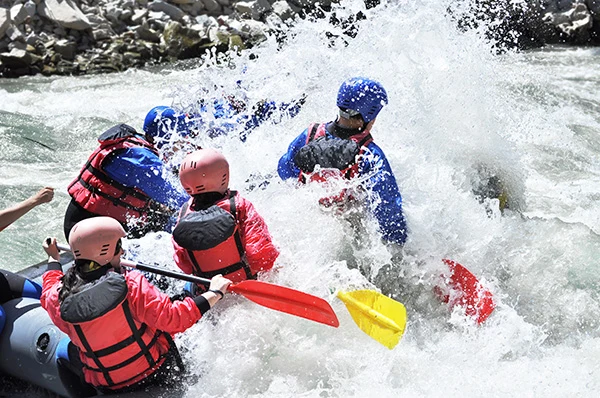
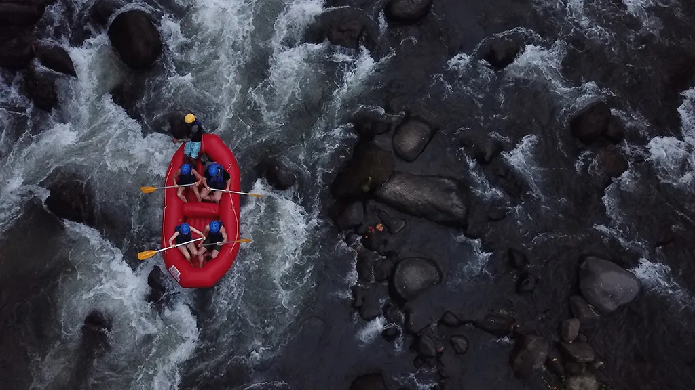
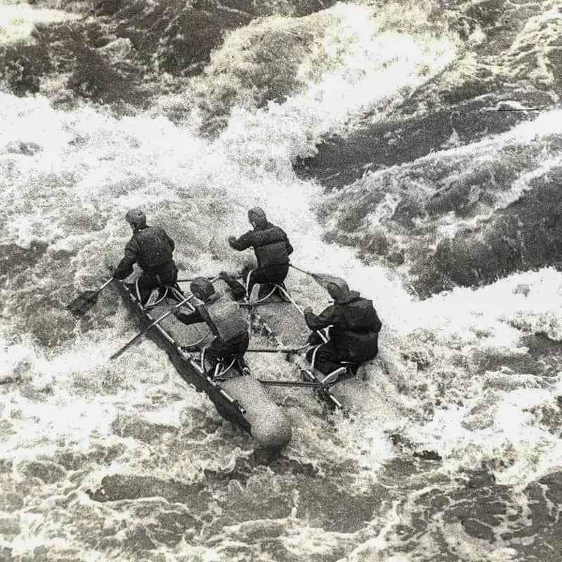
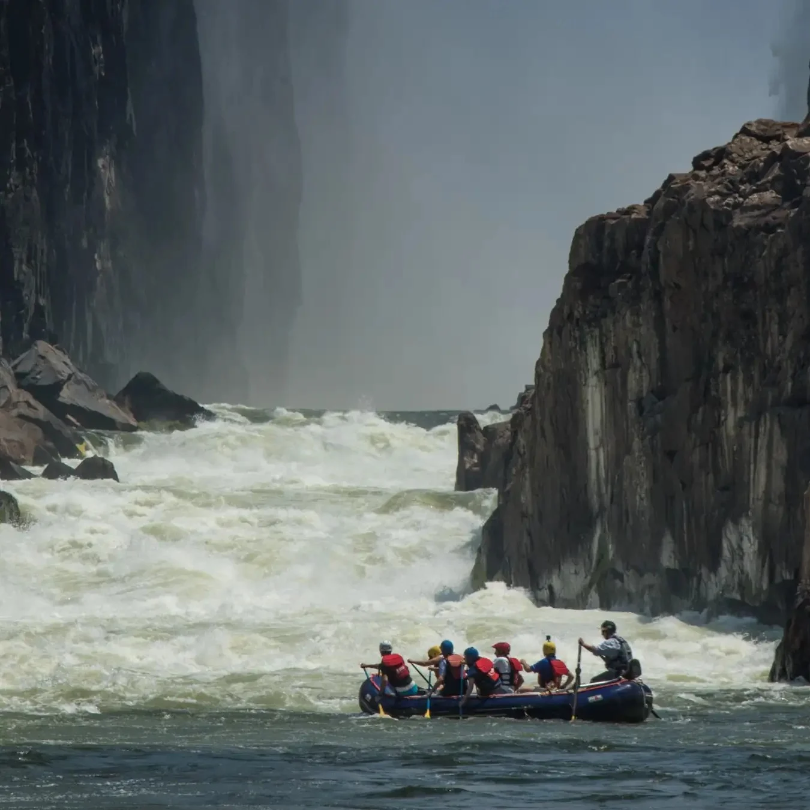
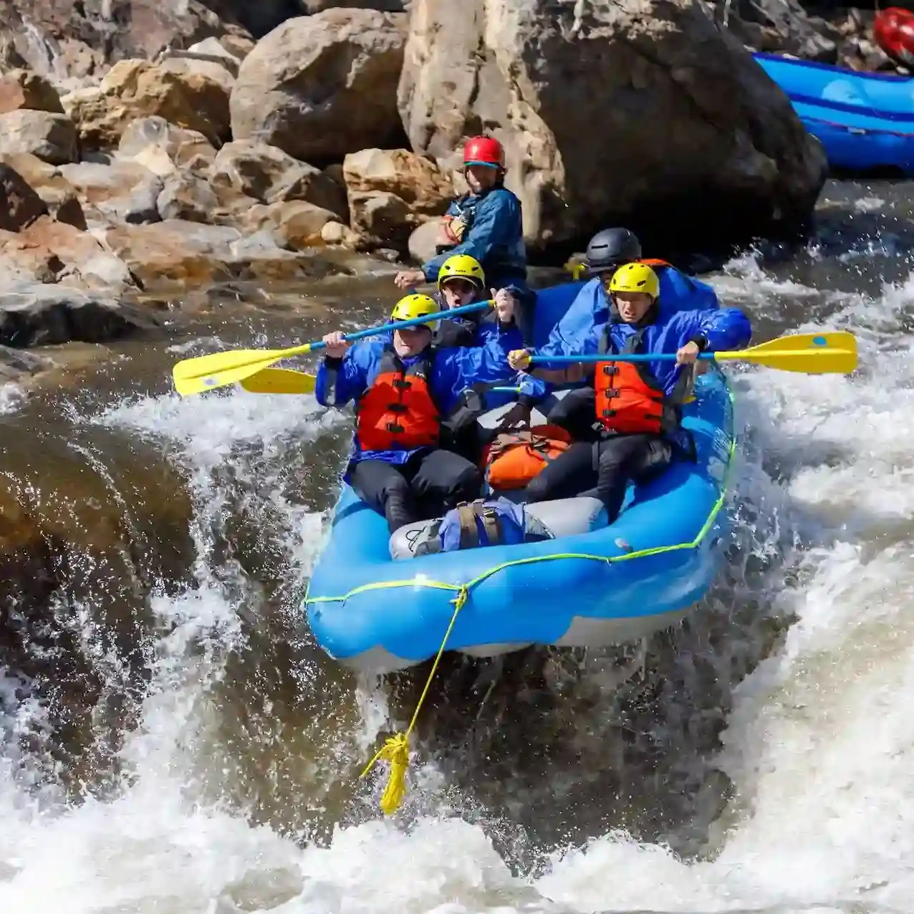
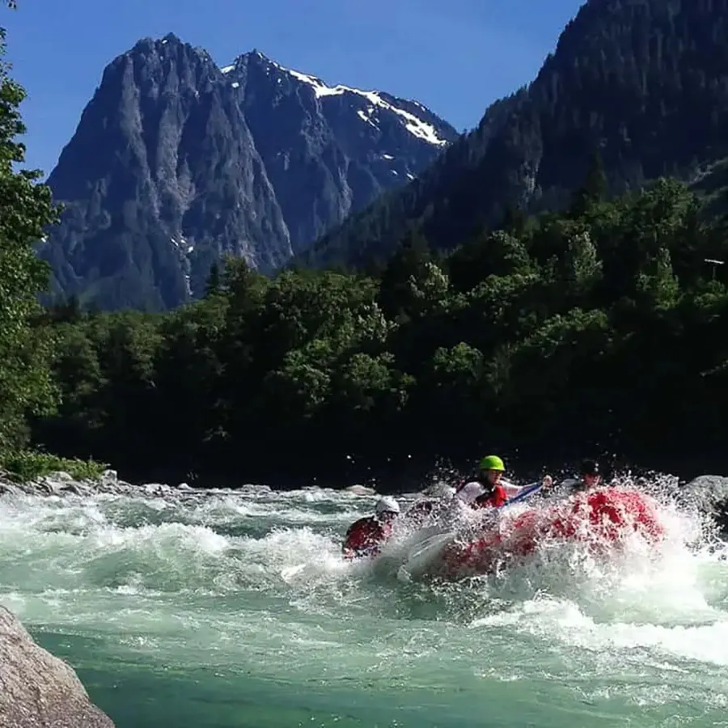
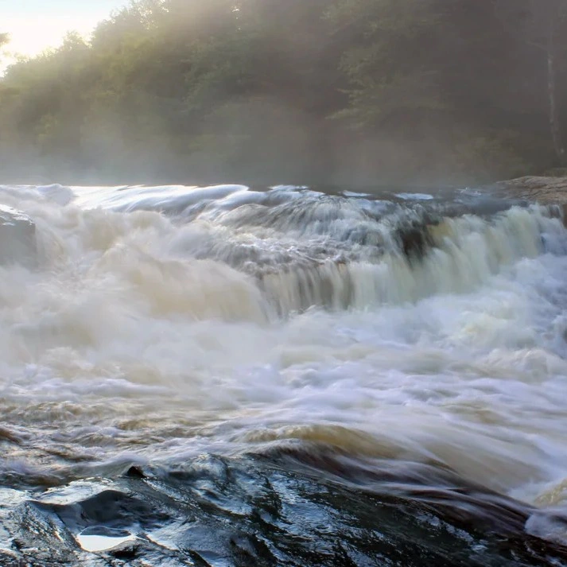
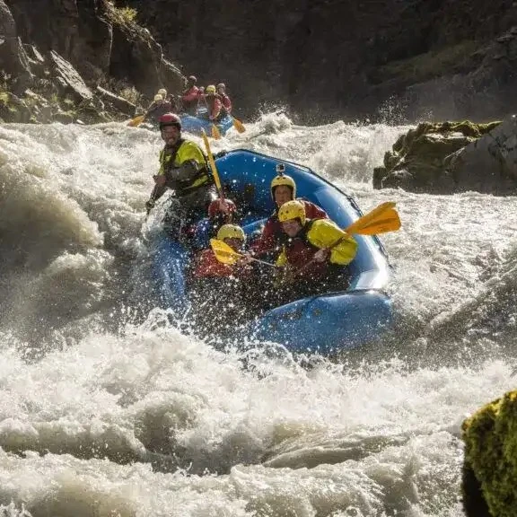

Every rapid is a new challenge! You'll feel proud when you navigate the waves like a pro.



Every rapid is a new challenge! You'll feel proud when you navigate the waves like a pro.
Rapids are ranked from Class I (easy) to Class VI (really hard). This helps people pick a river that matches their skill.

People have been trying to raft rivers for over 200 years. The first recorded trip on the Snake River was in 1811, but it didn't go very well!




